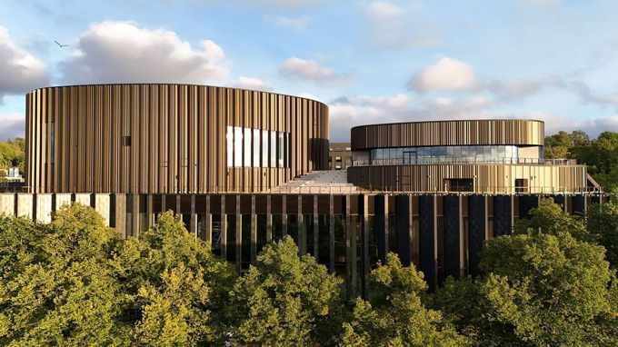

98建筑与设计
401图尔库音乐中心 Fuuga 开幕：1.5 万平方米、两座厅，造价约 9,000 万欧元
四维 89×1.1 建筑与设计≈ 98
PES Architects 与 Kahle Acoustics 设计的图尔库新音乐中心 Fuuga 已经开门，约 1.5 万平方米，两座厅分别可坐 1,350 人和 300 人，并带餐厅、酒廊和屋顶平台，成为图尔库爱乐的新驻地。预氧化铜鳞片立面沿奥拉河展开，大厅是贴漂白云杉的改性鞋盒，带可调天花与两层楼座。软开业两周已接待约 2 万名访客，造价约 9,000 万欧元，名称由约四成市民投票选出，取芬兰语「赋格」。
💡 点评本窗最完整的一座刚开门的公共建筑：铜鳞立面、云杉大厅和声学都写清楚了，软开业两周就来了约 2 万人。若会到图尔库，这座「赋格」值得专门排进行程。
来源：Wallpaper*